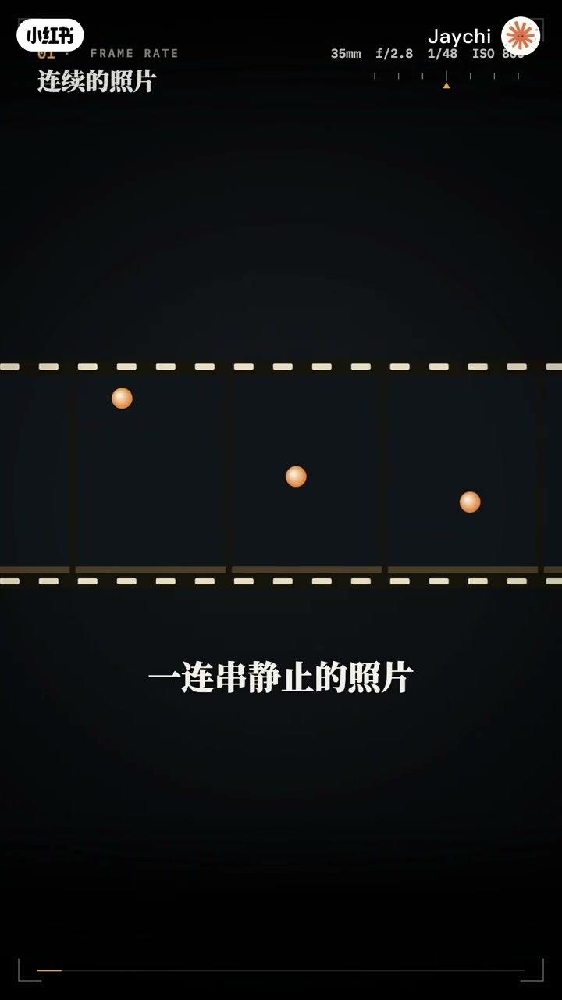
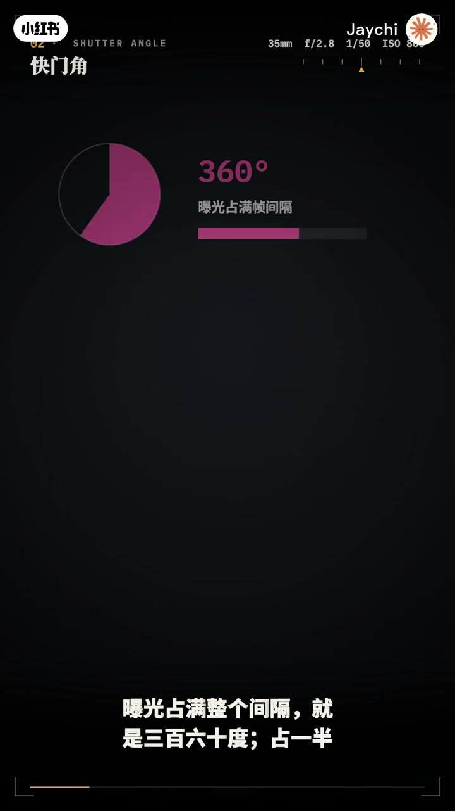
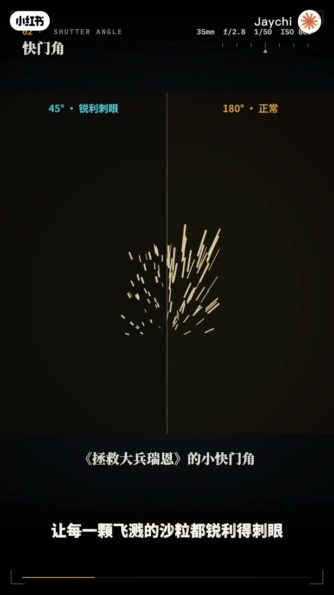
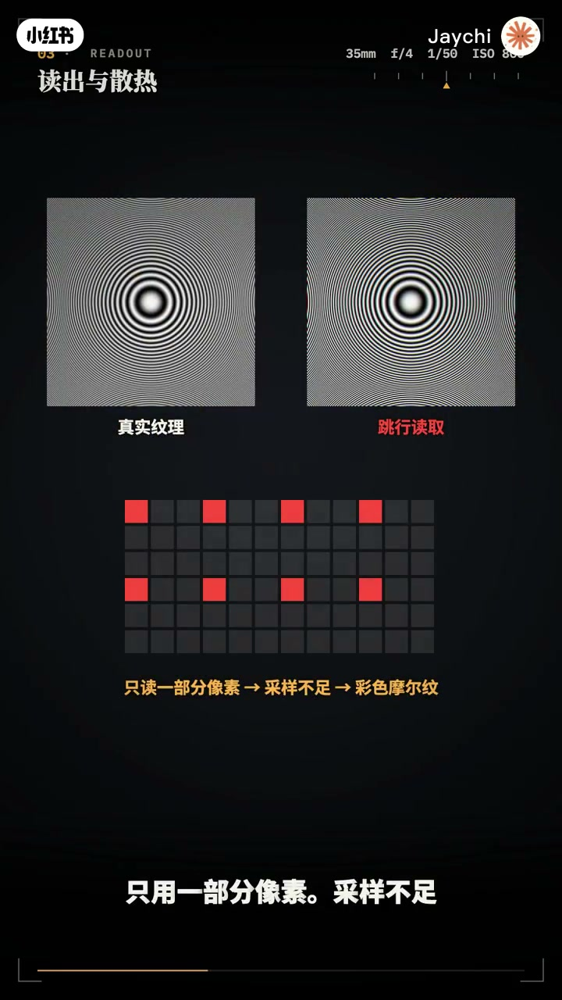
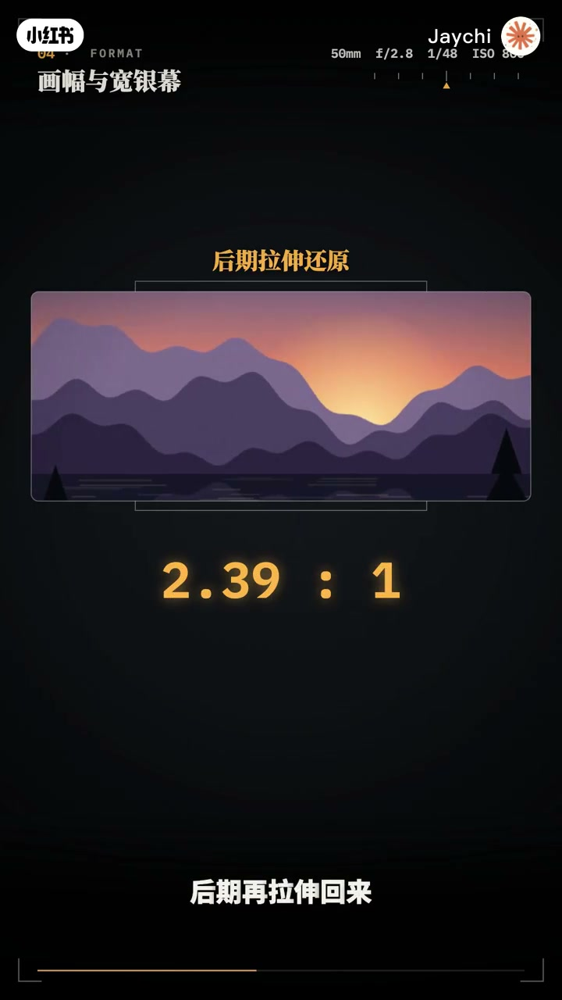
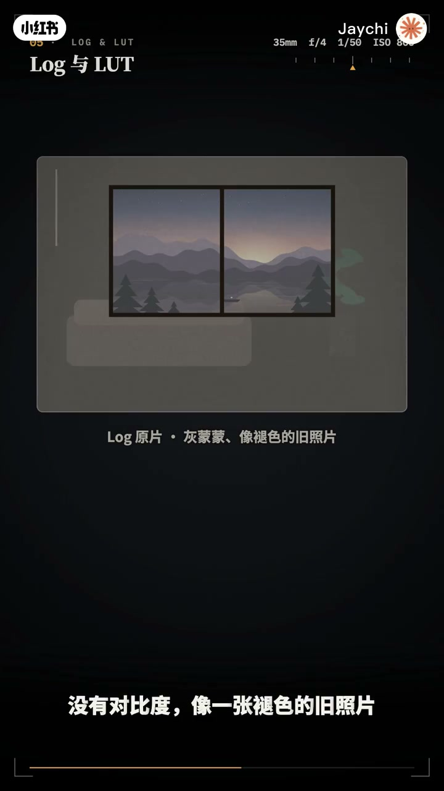
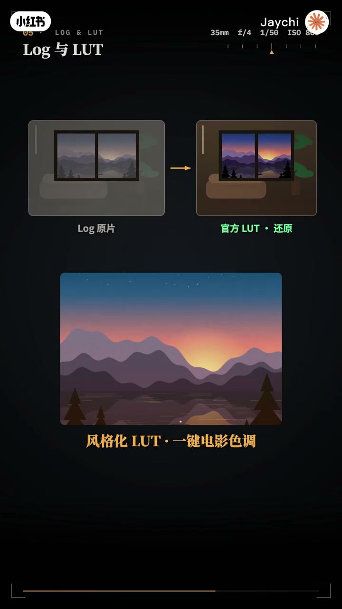
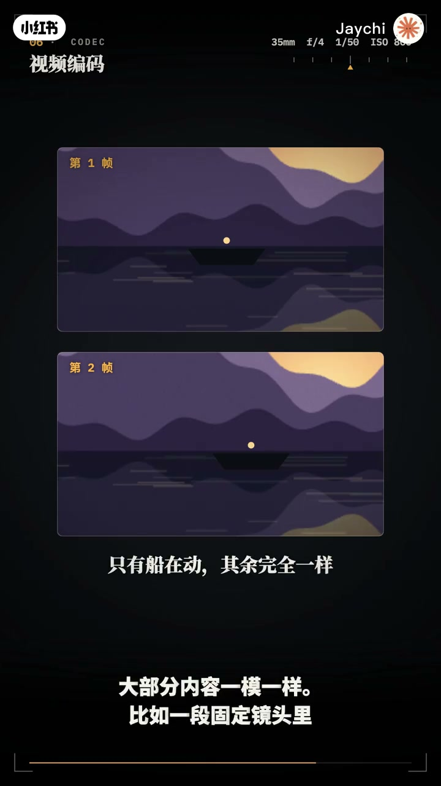
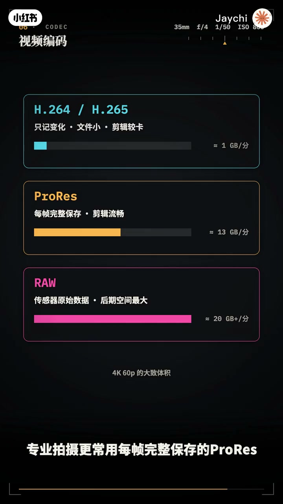

内容要点
「硬核动画弄懂相机视频拍摄原理」教程要点：同一台相机,拍照和录像,其实是两套完全不同的物理和工程 → 1秒24张画面,每秒近10个吉比特的原始数据,一直在发热的传感器,还有拍照时从来不用考虑的快门规则 → 这一集,把相机和电影记录视频的原理
知识结构
同一台相机,拍照和录像,其实是两套完全不同的物理和工程
电影机最常用的传感器尺寸叫超35,大约25毫米宽,接近APS-C,它源自35毫米
编码器先把画面拆成两部分,黑白的亮度和单独的颜色
- 同一台相机,拍照和录像,其实是两套完全不同的物理和工程
- 1秒24张画面,每秒近10个吉比特的原始数据,一直在发热的传感器,还有拍照时从来不用考虑的快门规则
- 这一集,把相机和电影记录视频的原理,一次讲透
- 视频的本质是一连串静止的照片,当静止画面以足够快的速度连续播放,大脑就会自动把他们脑补成连续的运动
- 电影的标准是每秒24帧,这是上世纪20年代有声电影诞生时定下的,既能保证声音质量,又最节省胶片
同一台相机,拍照和录像,其实是两套完全不同的物理和工程
00:00–04:20同一台相机,拍照和录像,其实是两套完全不同的物理
同一台相机,拍照和录像,其实是两套完全不同的物理和工程；1秒24张画面,每秒近10个吉比特的原始数据,一直在发热的传感器,还有拍照时从来不用考虑的快门规则；这一集,把相机和电影记录视频的原理,一次讲透；视频的本质是一连串静止的照片,当静止画面以足够快的速度连续播放,大脑就会自动把他们脑补成连续的运动；电影的标准是每秒24帧,这是上世纪20年代有声电影诞生时定下的,既能保证声音质量,又最节省胶片；电视和网络视频常用25,30或60帧,帧率越高运动越流畅,而24帧那一点点顿错,恰恰成了电影感的来源；拍照时,快门越快越清晰,但录视频,快门反而不能太快,这是为什么；先分清两个时间,帧率,决定一秒拍几张,24帧就是每隔24分之一秒拍一张,快门速度,决定每一张曝光多久；每一张的曝光时间,最长也不能超过两张之间的间隔,电影行业习惯把这段间隔画成一整个圆；曝光占满整个间隔就是360度,占一半就是180度,占四分之一就是90度,这个角度就叫快门角；这个说法来自胶片电影机,里面有一个旋转的圆盘,每转一圈拍一帧,圆盘缺口的角度就是光线能通过的时间比例；换算很简单,180度快门,快门速度就是帧率乘二分之一,24帧用五十分之一秒,60帧用一百二十分之一秒；为什么偏偏是180多,因为人眼看运动的物体本来就带一点模糊,每一帧留下恰到好处的拖影,连起来播放,动作就和肉眼看到的一样自然；快门太快,每一帧都像定格照片,连起来播放,动作一顿一顿的,太慢,拖影太长,画面又糊成一片；拯救大兵瑞恩的战争场面就故意用了很小的快门角,让每一颗飞舰的杀力都锐利得刺眼,营造紧张感；快门被锁定之后,就少了一个调节亮度的手段,晴天光线太强,画面一定过曝,办法是给镜头戴上墨镜,也就是ND减光镜；晴天用F2.8拍,要只让六十四分之一的光通过,也就是减掉六档；还有灯光屏闪,国内交流电视五十赫兹,灯光每秒闪一百次,快门设成五十分之一或一百分之一秒,每一帧都恰好包含完整的闪烁,画面就不会忽明忽暗；拍照只需读一次传感器,录视频要每秒读取几十次,一刻不停；大多数传感器逐行读取,读完一整帧需要十几毫秒,快速横摇时,画面就会歪斜,这是滚动快门,全局快门让所有像素同时曝光,彻底消除变形；为了读得够快,一些相机会跳行读取,只用一部分像素,采样不足,细密的纹理就会出现彩色波纹,也就是摩尔纹；更好的做法是抄彩样,读出全部像素,比如6K再缩小到4K,细节更锐,噪点更低,无耳纹也更少；代价是数据量和热量,4K60帧,10比特的原始画面每秒将近十几比特,持续读出河边马让芯片发热,这就是为什么专业电影机都装着风扇；我们常说的4K,其实有两种,电视用的3840x2160和电影院用的4096x2160



04:27–07:32电影机最常用的传感器尺寸叫超35,大约25毫米宽
电影机最常用的传感器尺寸叫超35,大约25毫米宽,接近APS-C,它源自35毫米电影胶片的画面尺寸；那种宽的惊人的电影画面,很多是用变形宽荧幕镜头拍的,镜头把画面水平压缩一半,塞进传感器,后期再拉伸回来,得到2.39比1的超宽画幅；压缩和拉伸也留下了标志性的痕迹,椭圆形的胶外光斑和横贯画面的蓝色拉丝光域；先理解什么是动态范围,一个画面里,从最暗到最亮,能同时看清多少层次；比如站在屋里拍窗外,普通相机要么拍清屋里,窗外一片死白,要么拍清窗外,屋里一片漆黑；亮度每翻一倍,角一档,电影机的传感器能记录十几档,而普通的视频格式和屏幕只能容纳七档左右；如果直接按普通格式录,超出的亮部变成死白,暗部变成死黑,这些细节就永远丢了；Log的做法,就像把一床后背紫鸦进行理箱,把十几档亮度按比例压扁,全部塞进视频文件里；所以Log原片看起来灰蒙蒙的,没有对比度,像一张褪色的就照片,但窗外的云和屋里的暗部,细节一个都没丢；为什么叫Log?普通格式里,一半的数值都用在了最亮的那一档上；Log用对数来分配,让每一档都分到差不多多的数值；压扁之后,每一档分到的数值更少,所以卫生特别重要；8比特只有256级,调色时,天空容易出现一道道断层,10比特有1024级,渐变依然顺滑；灰蒙蒙的Log,要怎么变回正常画面?答案是LUT,也就是查找表；LUT本质上就是一张颜色对照表,原片里的每一种颜色都对应着一个输出颜色；比如这种灰灰的蓝,查表之后就变成饱满的天空蓝；相机厂商会提供官方LUT,一键把Log还原成正常画面；调色师也可以用风格化的LUT,一键套上电影色调；所谓三维LUT,就是把所有颜色放进一个红绿蓝立方体,每个格点都记着自己该变成什么颜色；如果显示器足够亮,还可以直接输出HDR,把更亮的高光也原样显示出来；先算一笔账,4K60帧的原始画面,每秒将近十几比特,一分钟就要70多GB；视频编码,就是在人眼几乎看不出来的前提下,把数据变小；它主要靠三招；第一招,少记颜色,人眼对明暗很敏感,对颜色却很迟钝



07:35–10:37编码器先把画面拆成两部分,黑白的亮度和单独的颜色
编码器先把画面拆成两部分,黑白的亮度和单独的颜色；亮度每个像素都记,颜色四个像素共用一个,这就是4比2比0；数据少了一半,你却几乎看不出区别；第二招,纸记变化,视频里相邻两帧,大部分内容一模一样；比如一段固定镜头里,只有一只船在动；那就没必要每一帧都完整保存,只需要告诉电脑,这几块画面往右移了几个像素,这叫运动矢量；所以,一段视频里,只有少数帧是完整保存的,叫关键帧,也叫安一帧；其余的帧指记录变化,叫P帧和B帧,就像连环画,只有第一页是完整的,后面每页只写着和上一页,你哪里变了；第三招,丢掉看不出的细节,编码器把画面切成小方块,把人眼不敏感的细碎纹理舍弃掉；三招加起来,数据能缩小几十倍,甚至上百倍,代价是,剪辑时电脑要把每一帧重新算出来,所以这种素材剪起来会卡,压得太狠,还会出现方块和色块；常见的H264和H265就是这种压缩,专业拍摄更常用每帧完整保存的ProRes,甚至直接记录传感器原始数据的RAW文件大,但画质和后期空间最好；用120帧拍摄,再按24帧播放,时间就被放慢了五倍,这就是升格慢动作,反过来,隔几秒拍一帧,就是延时摄影；要让画面稳,除了机身防抖,还有稳定器,三轴无刷电机,加上高速陀螺仪,每秒上千次反向修正,让镜头向悬浮在空中；声音同样重要,专业拍摄通常单独录音,48000Hz采样,32位辅点录音几乎不可能爆音；画面和声音靠时间码合场基本对齐,啪的一声就是后期同步的锚点；最后,六句话带走全部原理；视频是连续的照片,电影是每秒24帧；快门角是曝光占一帧时间的比例,180度最自然；持续读出,带来滚动快门,木耳纹和热量；LUT把宽广的亮度压扁保存,LUT再把它还原；编码少记颜色,纸记变化,把数据压小几十倍；拍照记录瞬间,而视频记录时间；感谢观看



口述/画面要点（40段）
结合 Whisper medium 与画面大字整理；专有名词已校对。
同一台相机,拍照和录像,其实是两套完全不同的物理和工程
1秒24张画面,每秒近10个吉比特的原始数据,一直在发热的传感器,还有拍照时从来不用考虑的快门规则
这一集,把相机和电影记录视频的原理,一次讲透
视频的本质是一连串静止的照片,当静止画面以足够快的速度连续播放,大脑就会自动把他们脑补成连续的运动
电影的标准是每秒24帧,这是上世纪20年代有声电影诞生时定下的,既能保证声音质量,又最节省胶片
电视和网络视频常用25,30或60帧,帧率越高运动越流畅,而24帧那一点点顿错,恰恰成了电影感的来源
拍照时,快门越快越清晰,但录视频,快门反而不能太快,这是为什么
先分清两个时间,帧率,决定一秒拍几张,24帧就是每隔24分之一秒拍一张,快门速度,决定每一张曝光多久
每一张的曝光时间,最长也不能超过两张之间的间隔,电影行业习惯把这段间隔画成一整个圆
曝光占满整个间隔就是360度,占一半就是180度,占四分之一就是90度,这个角度就叫快门角
这个说法来自胶片电影机,里面有一个旋转的圆盘,每转一圈拍一帧,圆盘缺口的角度就是光线能通过的时间比例
换算很简单,180度快门,快门速度就是帧率乘二分之一,24帧用五十分之一秒,60帧用一百二十分之一秒
为什么偏偏是180多,因为人眼看运动的物体本来就带一点模糊,每一帧留下恰到好处的拖影,连起来播放,动作就和肉眼看到的一样自然
快门太快,每一帧都像定格照片,连起来播放,动作一顿一顿的,太慢,拖影太长,画面又糊成一片
拯救大兵瑞恩的战争场面就故意用了很小的快门角,让每一颗飞舰的杀力都锐利得刺眼,营造紧张感
快门被锁定之后,就少了一个调节亮度的手段,晴天光线太强,画面一定过曝,办法是给镜头戴上墨镜,也就是ND减光镜
晴天用F2.8拍,要只让六十四分之一的光通过,也就是减掉六档
还有灯光屏闪,国内交流电视五十赫兹,灯光每秒闪一百次,快门设成五十分之一或一百分之一秒,每一帧都恰好包含完整的闪烁,画面就不会忽明忽暗
拍照只需读一次传感器,录视频要每秒读取几十次,一刻不停
大多数传感器逐行读取,读完一整帧需要十几毫秒,快速横摇时,画面就会歪斜,这是滚动快门,全局快门让所有像素同时曝光,彻底消除变形
为了读得够快,一些相机会跳行读取,只用一部分像素,采样不足,细密的纹理就会出现彩色波纹,也就是摩尔纹
更好的做法是抄彩样,读出全部像素,比如6K再缩小到4K,细节更锐,噪点更低,无耳纹也更少
代价是数据量和热量,4K60帧,10比特的原始画面每秒将近十几比特,持续读出河边马让芯片发热,这就是为什么专业电影机都装着风扇
我们常说的4K,其实有两种,电视用的3840x2160和电影院用的4096x2160
电影机最常用的传感器尺寸叫超35,大约25毫米宽,接近APS-C,它源自35毫米电影胶片的画面尺寸
那种宽的惊人的电影画面,很多是用变形宽荧幕镜头拍的,镜头把画面水平压缩一半,塞进传感器,后期再拉伸回来,得到2.39比1的超宽画幅
压缩和拉伸也留下了标志性的痕迹,椭圆形的胶外光斑和横贯画面的蓝色拉丝光域
先理解什么是动态范围,一个画面里,从最暗到最亮,能同时看清多少层次
比如站在屋里拍窗外,普通相机要么拍清屋里,窗外一片死白,要么拍清窗外,屋里一片漆黑
亮度每翻一倍,角一档,电影机的传感器能记录十几档,而普通的视频格式和屏幕只能容纳七档左右
如果直接按普通格式录,超出的亮部变成死白,暗部变成死黑,这些细节就永远丢了
Log的做法,就像把一床后背紫鸦进行理箱,把十几档亮度按比例压扁,全部塞进视频文件里
所以Log原片看起来灰蒙蒙的,没有对比度,像一张褪色的就照片,但窗外的云和屋里的暗部,细节一个都没丢
为什么叫Log?普通格式里,一半的数值都用在了最亮的那一档上
Log用对数来分配,让每一档都分到差不多多的数值
压扁之后,每一档分到的数值更少,所以卫生特别重要
8比特只有256级,调色时,天空容易出现一道道断层,10比特有1024级,渐变依然顺滑
灰蒙蒙的Log,要怎么变回正常画面?答案是LUT,也就是查找表
LUT本质上就是一张颜色对照表,原片里的每一种颜色都对应着一个输出颜色
比如这种灰灰的蓝,查表之后就变成饱满的天空蓝